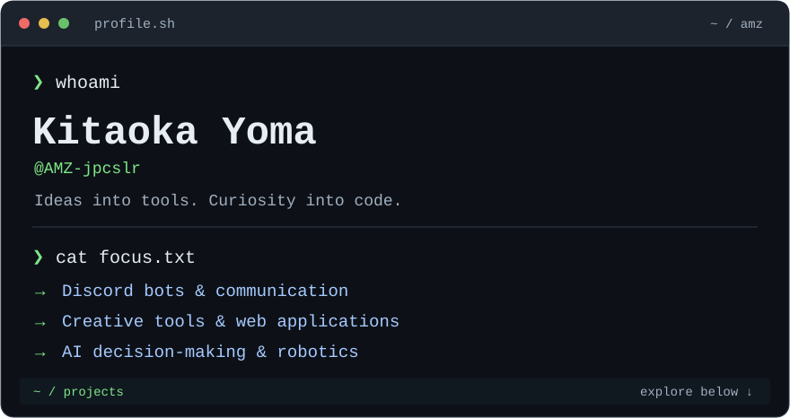
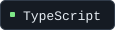
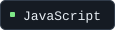
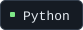
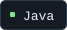
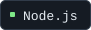
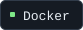

Portfolio ↗ · All repositories ↗
~/about
Discord Botや配信ツールなど、身近な課題を解決するソフトウェアを開発しています。AIの行動判断やロボットサッカーにも取り組んでいます。
~/toolbox
     
~/projects
|
01 / COMMUNICATION Yomiage Bot ↗テキストを声に、メンションを相手の言語に。VOICEVOXとDeepLを使った読み上げ・翻訳Bot。
|
02 / DISASTER INFORMATION Shindo Bot ↗地震・津波・地域別の気象情報を、いつものDiscordへ。雨雲レーダーの表示にも対応。
|
|
03 / CREATOR TOOLS Streaming Screen ↗テキスト・画像・時計を自由に配置。OBSの配信画面を組み立てるレイアウトエディター。
|
04 / AI / RESEARCH Artificial Moral Architecture ↗行動前の結果予測と、複数の当事者への影響評価を組み込むAIの行動判断基盤。個人研究として開発中。
|
More projects
- Web Browsing Inspection Proxy — HTTP / HTTPS通信を可視化する、学習・検証用プロキシ。
- SSL Robot AI — Javaでつくる、ロボットサッカーの2Dシミュレーター。
amz@github:~$ Thanks for stopping by.